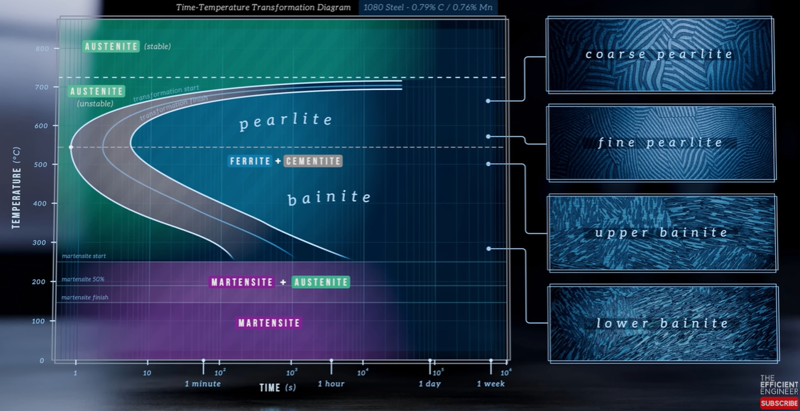
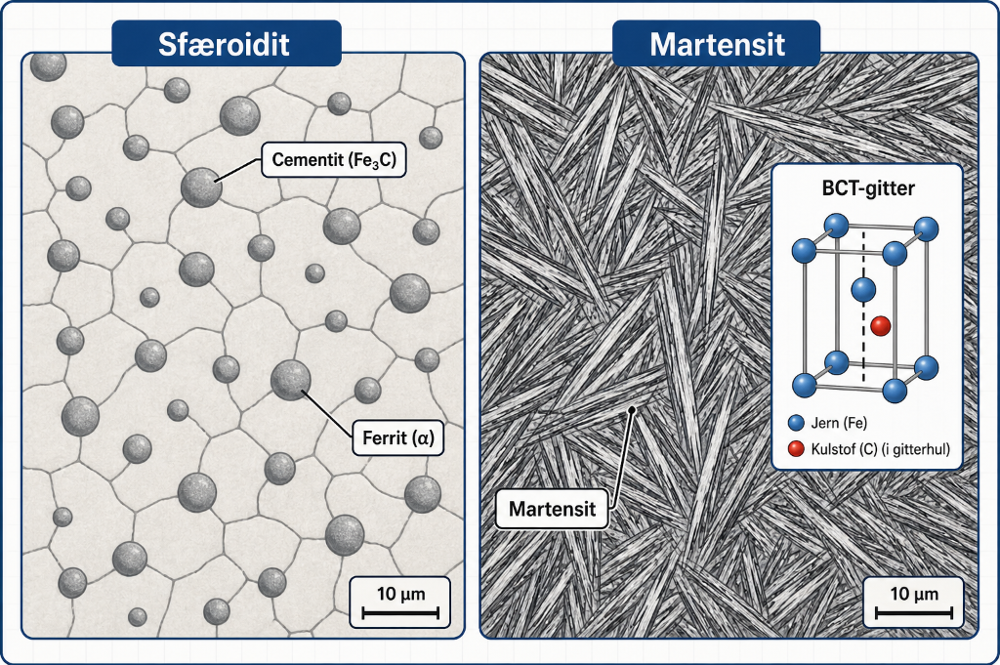

Materialelære 2 · Eksamenssæt forklaret
M-2 · TTT- og CCT-diagrammer
Ét-sidet overblik til 12-taller · Juni 2026
🏆
1 Spørgsmålet — hvad skal besvares?
- a) Sammenhængen mellem jern-kulstof-diagrammet og TTT-diagrammet.
- b) Forskellen mellem TTT- og CCT-diagrammer, og hvornår de hver især anvendes.
- c) Dannelsen af perlit, bainit, sfæroidit og martensit via et TTT-diagram.
- d) Hvordan kølehastighed påvirker den resulterende mikrostruktur.
- e) De mekaniske egenskaber for de forskellige mikrostrukturer.
- f) Hvorfor CCT-diagrammer er mere praksisnære end TTT ved industrielle processer.
Til fremlæggelsen: diagrammerne skal bruges aktivt — peg på C-kurver, Ms-linje og kølekurver undervejs.
2 Kernefakta — de tre zoner
| Temperatur | Struktur | Egenskab |
|---|---|---|
| Høj (nær 727 °C) | Grov perlit | Blød, sej · lang ventetid |
| Mellem (300–550 °C) | Bainit | Hård, men sejere end martensit |
| Lav (under Ms ≈ 230 °C) | Martensit | Hårdest, sprødt · diffusionsløs |
Analogi: TTT = "hold knappen nede" (isotermt). CCT = "tryk og slip gradvist" (virkelighedens kontinuerlige afkøling).
3 TTT-diagrammet (eutektoidt stål)
Billede mangler — indsæt i
images/M2_fig01_ttt_diagram.png
images/images/M2_fig01_ttt_diagram.png

Sammenhæng med Fe-C: TTT gælder under A₁-linjen. Udgangspunktet er austenit fra Fe-C-diagrammet — stålet austenitiseres, og TTT beskriver hvilken struktur der dannes ved afkøling.
4 Kølehastighed → mikrostruktur
Austenit (γ) → perlit / bainit / martensit
Billede mangler
images/M2_fig02_koelekurver.png
images/M2_fig02_koelekurver.png

Nøgle: rammer kølekurven C-kurvens "næse" → diffusion når at ske (perlit/bainit). Undgår den næsen → martensit.
7 Sfæroidit & martensit
Billede mangler — indsæt i
images/M2_fig03_sfaeroidit.png
images/images/M2_fig03_sfaeroidit.png

Vendepunkt: sfæroidit fra lang glødning under A₁ = ideel til maskinering. Martensit skal altid anlasses bagefter for at genskabe sejhed.
5 TTT vs. CCT
Billede mangler
images/M2_fig04_ttt.png
images/M2_fig04_ttt.png

Billede mangler
images/M2_fig05_cct.png
images/M2_fig05_cct.png

6 Mekaniske egenskaber pr. mikrostruktur
| Mikrostruktur | Dannelse | HB | Duktilitet | Anvendelse |
|---|---|---|---|---|
| Sfæroidit | Lang glødning ~700 °C | 170 | Høj | Kold bearbejdning |
| Grov perlit | Langsom 650–727 °C | 200 | Middel | Konstruktionsdele |
| Fin perlit | Hurtigere 575–650 °C | 300 | Middel | Fjeder, høj styrke |
| Bainit (øvre) | Isoterm 400–550 °C | 400 | God | Gear, bolte |
| Bainit (nedre) | Isoterm 250–400 °C | 550 | Moderat | Højstyrke-stål |
| Martensit | Kritisk afkøl., under Ms | 700+ | Meget lav | Hærdet stål (+ anlas) |
8 Korte svar — klar til eksamen
a) Fe-C ↔ TTT?TTT gælder under A₁ for én sammensætning. Start = austenit fra Fe-C; TTT viser hvilken struktur afkølingen giver.
b) TTT vs. CCT?TTT = isotermt (fast temp.). CCT = kontinuerlig afkøling, kurver forskudt ned/højre. CCT bruges industrielt.
c) Strukturerne?Perlit (høj temp), bainit (mellem), sfæroidit (lang glødning), martensit (diffusionsløs, under Ms).
d) Kølehastighed?Langsom → perlit. Middel → bainit. Hurtigere end kritisk (forbi næsen) → martensit.
e) Egenskaber?Hårdhed stiger sfæroidit → perlit → bainit → martensit. Duktilitet falder modsat.
f) CCT praksisnær?Industri køler aldrig isotermt — man bruger vand/olie/luft. CCT viser direkte struktur ved given kølehastighed.
9 Huskeregler & referencer
Hurtige huskeregler:
- CCT = TTT forskudt ned og til højre — husk retningen.
- Ms ≈ 230 °C: under denne dannes martensit (diffusionsløs).
- Austempering = stop i bainit-zonen → nedre bainit (hård + sej, færre spændinger).
Referencer:
- Lektion 4 & 5 MMT2 — Fasetransformationer ·
MMT2/materialelærer/ - Callister & Rethwisch, 10. udg., Kap. 10 (s. 340–375); Fig. 10.13 (TTT), Fig. 10.22 (CCT)
- Kap04 — Varmebehandling ·
referencer/struktur/kapitler/Kap04/